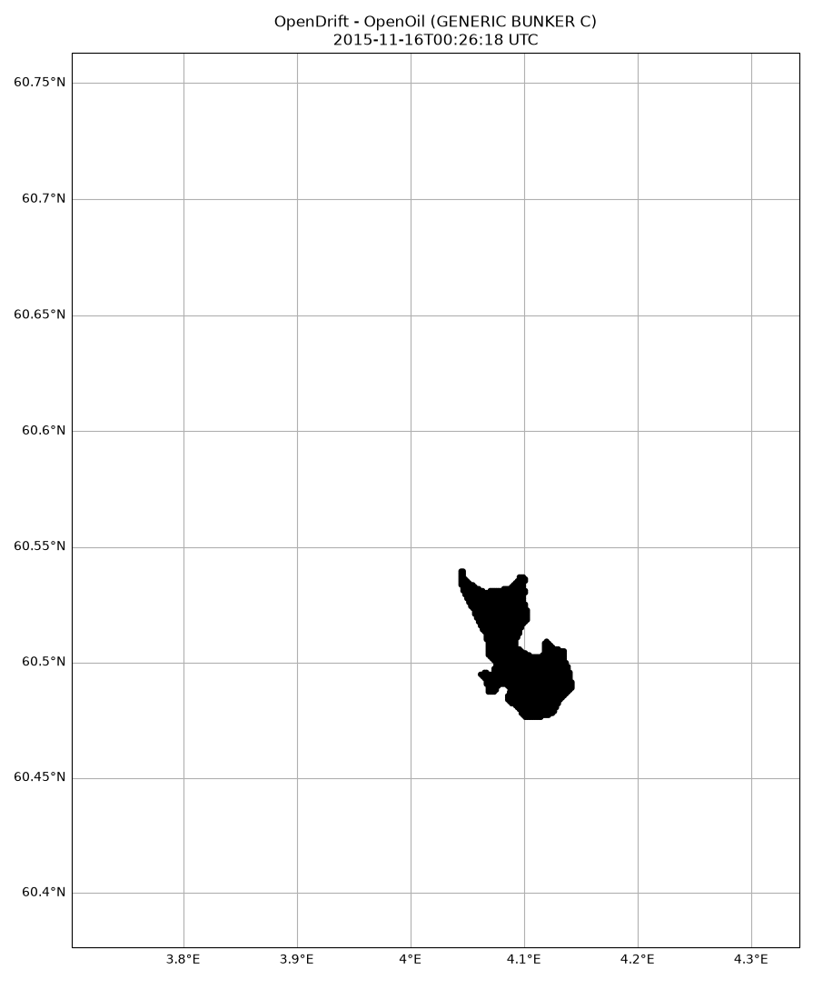
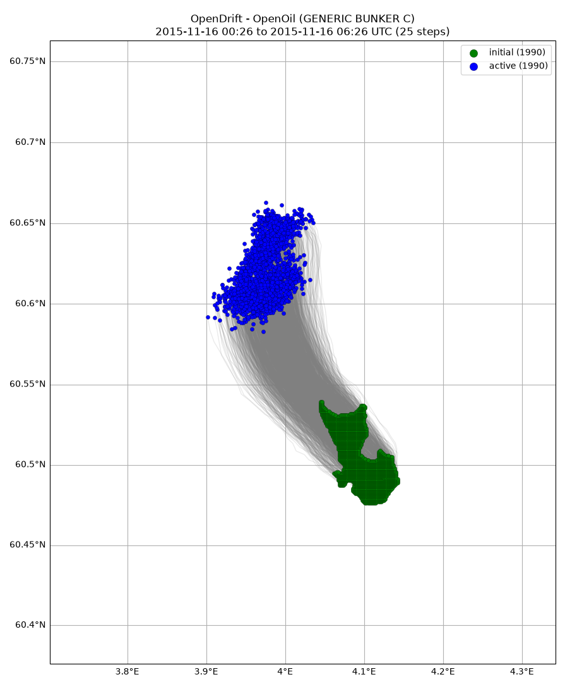

Note
Go to the end to download the full example code.
Satellite
from opendrift import test_data_folder as tdf
from opendrift.readers import reader_netCDF_CF_generic
from opendrift.models.openoil import OpenOil
o = OpenOil(loglevel=20) # Set loglevel to 0 for debug information
11:14:38 INFO opendrift:569: OpenDriftSimulation initialised (version 1.14.10 / v1.14.10-13-g8f62b95)
Adjusting some configuration
o.set_config('drift:vertical_mixing', False)
o.set_config('processes:dispersion', True)
o.set_config('processes:evaporation', False)
o.set_config('processes:emulsification', True)
o.set_config('drift:current_uncertainty', .1) # Diffusion
o.set_config('drift:wind_uncertainty', 1)
# Arome
reader_arome = reader_netCDF_CF_generic.Reader(tdf +
'16Nov2015_NorKyst_z_surface/arome_subset_16Nov2015.nc')
# Norkyst
reader_norkyst = reader_netCDF_CF_generic.Reader(tdf +
'16Nov2015_NorKyst_z_surface/norkyst800_subset_16Nov2015.nc')
o.add_reader([reader_norkyst, reader_arome])
11:14:38 INFO opendrift.readers:67: Opening file with xr.open_dataset
11:14:39 INFO opendrift.readers.reader_netCDF_CF_generic:340: Detected dimensions: {'time': 'time', 'x': 'x', 'y': 'y'}
11:14:39 INFO opendrift.readers:67: Opening file with xr.open_dataset
11:14:39 INFO opendrift.readers.reader_netCDF_CF_generic:340: Detected dimensions: {'x': 'X', 'y': 'Y', 'z': 'depth', 'time': 'time'}
Seed oil particles within contour detected from satellite
o.seed_from_gml(tdf + 'radarsat_oil_satellite_observation/RS2_20151116_002619_0127_SCNB_HH_SGF_433012_9730_12182143_Oil.gml',
num_elements=2000)
11:14:39 INFO opendrift.models.openoil.openoil:1720: Oil type not specified, using default: GENERIC BUNKER C
11:14:39 INFO opendrift.models.openoil.adios.dirjs:86: Querying ADIOS database for oil: GENERIC BUNKER C
11:14:39 INFO opendrift.models.openoil.openoil:1731: Using density 988.1 and viscosity 0.021692333877975332 of oiltype GENERIC BUNKER C
11:14:39 INFO opendrift.models.basemodel.environment:203: Adding a global landmask from GSHHG
11:14:44 INFO opendrift.models.basemodel.environment:227: Fallback values will be used for the following variables which have no readers:
11:14:44 INFO opendrift.models.basemodel.environment:230: sea_surface_height: 0.000000
11:14:44 INFO opendrift.models.basemodel.environment:230: upward_sea_water_velocity: 0.000000
11:14:44 INFO opendrift.models.basemodel.environment:230: sea_surface_wave_significant_height: 0.000000
11:14:44 INFO opendrift.models.basemodel.environment:230: sea_surface_wave_stokes_drift_x_velocity: 0.000000
11:14:44 INFO opendrift.models.basemodel.environment:230: sea_surface_wave_stokes_drift_y_velocity: 0.000000
11:14:44 INFO opendrift.models.basemodel.environment:230: sea_surface_wave_period_at_variance_spectral_density_maximum: 0.000000
11:14:44 INFO opendrift.models.basemodel.environment:230: sea_surface_wave_mean_period_from_variance_spectral_density_second_frequency_moment: 0.000000
11:14:44 INFO opendrift.models.basemodel.environment:230: sea_ice_area_fraction: 0.000000
11:14:44 INFO opendrift.models.basemodel.environment:230: sea_ice_x_velocity: 0.000000
11:14:44 INFO opendrift.models.basemodel.environment:230: sea_ice_y_velocity: 0.000000
11:14:44 INFO opendrift.models.basemodel.environment:230: sea_water_temperature: 10.000000
11:14:44 INFO opendrift.models.basemodel.environment:230: sea_water_salinity: 34.000000
11:14:44 INFO opendrift.models.basemodel.environment:230: sea_floor_depth_below_sea_level: 10000.000000
11:14:44 INFO opendrift.models.basemodel.environment:230: horizontal_diffusivity: 0.000000
11:14:44 INFO opendrift.models.basemodel.environment:230: ocean_vertical_diffusivity: 0.020000
11:14:44 INFO opendrift.models.basemodel.environment:230: ocean_mixed_layer_thickness: 50.000000
Running model for 6 hours
o.run(steps=6*4, time_step=900)
11:14:44 INFO opendrift:1903: Skipping environment variable upward_sea_water_velocity because of condition ['drift:vertical_advection', 'is', False]
11:14:44 INFO opendrift:1903: Skipping environment variable ocean_vertical_diffusivity because of condition ['drift:vertical_mixing', 'is', False]
11:14:44 INFO opendrift:1903: Skipping environment variable ocean_mixed_layer_thickness because of condition ['drift:vertical_mixing', 'is', False]
11:14:44 INFO opendrift:1914: Storing previous values of element property lon because of condition (('general:coastline_action', 'in', ['stranding', 'previous']), 'or', ('general:seafloor_action', 'in', ['previous']))
11:14:44 INFO opendrift:1914: Storing previous values of element property lat because of condition (('general:coastline_action', 'in', ['stranding', 'previous']), 'or', ('general:seafloor_action', 'in', ['previous']))
11:14:44 INFO opendrift:955: Using existing reader for land_binary_mask to move elements to ocean
11:14:44 INFO opendrift:986: All points are in ocean
11:14:44 INFO opendrift.models.openoil.openoil:697: Oil-water surface tension is 0.035935 Nm
11:14:44 INFO opendrift.models.openoil.openoil:710: Max water fraction not available for GENERIC BUNKER C, using default
11:14:44 INFO opendrift:2211: 2015-11-16 00:26:18.770000 - step 1 of 24 - 1990 active elements (0 deactivated)
11:14:44 INFO opendrift:2211: 2015-11-16 00:41:18.770000 - step 2 of 24 - 1990 active elements (0 deactivated)
11:14:44 INFO opendrift:2211: 2015-11-16 00:56:18.770000 - step 3 of 24 - 1990 active elements (0 deactivated)
11:14:45 INFO opendrift:2211: 2015-11-16 01:11:18.770000 - step 4 of 24 - 1990 active elements (0 deactivated)
11:14:45 INFO opendrift:2211: 2015-11-16 01:26:18.770000 - step 5 of 24 - 1990 active elements (0 deactivated)
11:14:45 INFO opendrift:2211: 2015-11-16 01:41:18.770000 - step 6 of 24 - 1990 active elements (0 deactivated)
11:14:45 INFO opendrift:2211: 2015-11-16 01:56:18.770000 - step 7 of 24 - 1990 active elements (0 deactivated)
11:14:45 INFO opendrift:2211: 2015-11-16 02:11:18.770000 - step 8 of 24 - 1990 active elements (0 deactivated)
11:14:45 INFO opendrift:2211: 2015-11-16 02:26:18.770000 - step 9 of 24 - 1990 active elements (0 deactivated)
11:14:45 INFO opendrift:2211: 2015-11-16 02:41:18.770000 - step 10 of 24 - 1990 active elements (0 deactivated)
11:14:45 INFO opendrift:2211: 2015-11-16 02:56:18.770000 - step 11 of 24 - 1990 active elements (0 deactivated)
11:14:45 INFO opendrift:2211: 2015-11-16 03:11:18.770000 - step 12 of 24 - 1990 active elements (0 deactivated)
11:14:45 INFO opendrift:2211: 2015-11-16 03:26:18.770000 - step 13 of 24 - 1990 active elements (0 deactivated)
11:14:45 INFO opendrift:2211: 2015-11-16 03:41:18.770000 - step 14 of 24 - 1990 active elements (0 deactivated)
11:14:45 INFO opendrift:2211: 2015-11-16 03:56:18.770000 - step 15 of 24 - 1990 active elements (0 deactivated)
11:14:45 INFO opendrift:2211: 2015-11-16 04:11:18.770000 - step 16 of 24 - 1990 active elements (0 deactivated)
11:14:46 INFO opendrift:2211: 2015-11-16 04:26:18.770000 - step 17 of 24 - 1990 active elements (0 deactivated)
11:14:46 INFO opendrift:2211: 2015-11-16 04:41:18.770000 - step 18 of 24 - 1990 active elements (0 deactivated)
11:14:46 INFO opendrift:2211: 2015-11-16 04:56:18.770000 - step 19 of 24 - 1990 active elements (0 deactivated)
11:14:46 INFO opendrift:2211: 2015-11-16 05:11:18.770000 - step 20 of 24 - 1990 active elements (0 deactivated)
11:14:46 INFO opendrift:2211: 2015-11-16 05:26:18.770000 - step 21 of 24 - 1990 active elements (0 deactivated)
11:14:46 INFO opendrift:2211: 2015-11-16 05:41:18.770000 - step 22 of 24 - 1990 active elements (0 deactivated)
11:14:46 INFO opendrift:2211: 2015-11-16 05:56:18.770000 - step 23 of 24 - 1990 active elements (0 deactivated)
11:14:46 INFO opendrift:2211: 2015-11-16 06:11:18.770000 - step 24 of 24 - 1990 active elements (0 deactivated)
Print and plot results
print(o)
o.animation(fast=True, buffer=0.1)
===========================
--------------------
Reader performance:
--------------------
/root/project/tests/test_data/16Nov2015_NorKyst_z_surface/norkyst800_subset_16Nov2015.nc
0:00:00.1 total
0:00:00.0 preparing
0:00:00.0 reading
0:00:00.0 interpolation
0:00:00.0 interpolation_time
0:00:00.0 rotating vectors
0:00:00.0 masking
--------------------
/root/project/tests/test_data/16Nov2015_NorKyst_z_surface/arome_subset_16Nov2015.nc
0:00:00.1 total
0:00:00.0 preparing
0:00:00.0 reading
0:00:00.0 interpolation
0:00:00.0 interpolation_time
0:00:00.0 rotating vectors
0:00:00.0 masking
--------------------
global_landmask
0:00:00.0 total
0:00:00.0 preparing
0:00:00.0 reading
0:00:00.0 masking
--------------------
Performance:
7.9 total time
6.1 configuration
0.0 preparing main loop
0.0 moving elements to ocean
1.7 main loop
0.1 updating elements
0.0 oil weathering
0.0 updating viscosities
0.0 updating densities
0.0 emulsification
0.0 dispersion
0.0 cleaning up
--------------------
===========================
Model: OpenOil (OpenDrift version 1.14.10)
1990 active Oil particles (0 deactivated, 0 scheduled)
-------------------
Environment variables:
-----
x_sea_water_velocity
y_sea_water_velocity
1) /root/project/tests/test_data/16Nov2015_NorKyst_z_surface/norkyst800_subset_16Nov2015.nc
-----
x_wind
y_wind
1) /root/project/tests/test_data/16Nov2015_NorKyst_z_surface/arome_subset_16Nov2015.nc
-----
land_binary_mask
1) global_landmask
-----
Readers not added for the following variables:
horizontal_diffusivity
sea_floor_depth_below_sea_level
sea_ice_area_fraction
sea_ice_x_velocity
sea_ice_y_velocity
sea_surface_height
sea_surface_wave_mean_period_from_variance_spectral_density_second_frequency_moment
sea_surface_wave_period_at_variance_spectral_density_maximum
sea_surface_wave_significant_height
sea_surface_wave_stokes_drift_x_velocity
sea_surface_wave_stokes_drift_y_velocity
sea_water_salinity
sea_water_temperature
Discarded readers:
Time:
Start: 2015-11-16 00:26:18.770000 UTC
Present: 2015-11-16 06:26:18.770000 UTC
Calculation steps: 24 * 0:15:00 - total time: 6:00:00
Output steps: 25 * 0:15:00
===========================
11:14:46 WARNING opendrift:2574: Plotting fast. This will make your plots less accurate.
11:14:48 INFO opendrift:4780: Saving animation to /root/project/docs/source/gallery/animations/example_satellite_0.gif...
11:15:02 INFO opendrift:3202: Time to make animation: 0:00:16.236173

o.plot(fast=True, buffer=0.1)

11:15:02 WARNING opendrift:2574: Plotting fast. This will make your plots less accurate.
(<GeoAxes: title={'center': 'OpenDrift - OpenOil (GENERIC BUNKER C)\n2015-11-16 00:26 to 2015-11-16 06:26 UTC (25 steps)'}>, <Figure size 895.314x1100 with 1 Axes>)
Total running time of the script: (0 minutes 38.532 seconds)